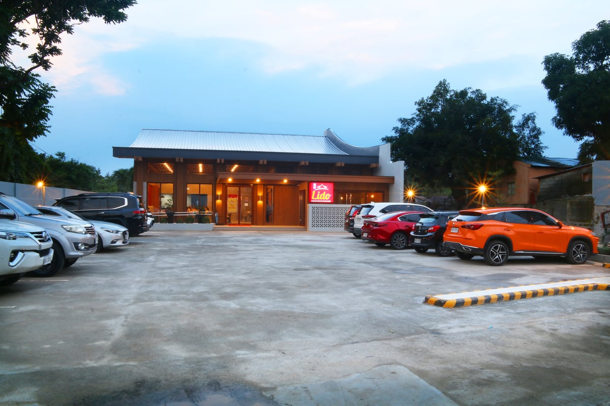

Tape
PSA (BusinessWorld, Sep 14): August palay farmgate averaged ₱22.16/kg, +29.9% YoY, −1% MoM. Hot spots: Ilocos +53.6% YoY to ₱23.57; Central Visayas +41.1% YoY / +15.8% MoM to ₱28.07; Occidental Mindoro +94.1% YoY to ₱27.08; Cebu +35.5% YoY / +25.9% MoM to ₱28.75. Cavite: −16.4% MoM to ₱17.16 (biggest provincial drop) but still +47.9% YoY. Only BARMM was down YoY (−1% to ₱20.61), up 2.8% MoM. Insider PH (Sep 12): Jollibee PH wins Brand of the Year Grand Prix at Marketech NEXT Awards 2026 — 5 Gold / 3 Silver across gamification, influencer, martech, PR, events, video, omnichannel; named plays include Joy Run App Game, Generation Joy, Bida Best/Pinoy, Museum of Pride, app/CRM stack. Tribune (Sep 9): Lido Cocina Tsina (Binondo 1936) opens Antipolo branch on Circumferential Road for its 90th year — modern dining room + function space; limited Sichuan shrimp with cashew nod to Antipolo’s cashew trade. [FLAG: anniversary opening coverage.]
For Calamba: farmgate still screaming YoY even as MoM eased 1% nationally — rice plate cost is not “fixed” by one soft month. Cavite’s MoM drop is local, not a national relief signal. Marketing: JFC is treating app + CRM + creator + culture as one stack, not a side budget — if your ticket fight is against value QSR, loyalty and gamified return beats a one-off discount. Catchment: east Metro / Rizal family Chinese FSR is still planting full-service + events rooms off circumferential roads — same playbook for mid-ticket casual if you hunt Rizal or east-Laguna traffic that skips mall rent.

Palay farmgate +29.9% YoY in August
14 Sep 2026
PSA via BusinessWorld: national average farmgate for palay hit ₱22.16 per kilogram in August — up 29.9% from a year earlier, down 1% from July. Regional heat was uneven. Ilocos led the year-on-year jump at 53.6% (₱23.57/kg). Central Visayas was up 41.1% YoY to ₱28.07 and posted the biggest month-on-month gain (+15.8%). Occidental Mindoro led provinces at +94.1% YoY to ₱27.08. Cebu rose 35.5% YoY and 25.9% MoM to ₱28.75. Cavite showed the sharpest provincial MoM drop (−16.4% to ₱17.16) but remained +47.9% YoY. BARMM was the only region down year on year (−1% to ₱20.61), still up 2.8% MoM. COO read: this is the farmgate print under the rice inflation you already felt on the plate. A 1% MoM national ease does not unwind a ~30% YoY farmgate jump — treat soft weeks as buying windows, not as a structural reset. If your menu leans on rice-heavy plates or free rice, keep the cost line visible in weekly P&L reviews.
Open BusinessWorld
Jollibee wins on app, game, and culture — not just chicken
12 Sep 2026
Insider PH: Jollibee Philippines took the Brand of the Year Grand Prix at Marketech Asia-Pacific’s NEXT Awards Philippines 2026, topping overall points across categories. The brand banked five Gold and three Silver across gamification, influencer marketing, marketing technology, PR, events, video, and omnichannel. Named work includes the Joy Run App Game, Generation Joy Cycle 2, Bida Best, Bida Pinoy, Museum of Pride, and app/CRM programs, plus #JoyDelivered Christmas activation and Kids Values Meals. VP Marketing Dorothy Ching framed it as team + franchisee + store execution, with consumers as the push to raise the bar. Operator take: this is not a PR vanity list. It maps how the category leader is buying frequency — game loops, CRM, creators, and cultural moments as one system. If you compete on value breakfast or family tickets, a lone price cut loses to a retention stack. Build the cheapest version you can afford: own-app or Grab loyalty hooks, one recurring “reason to return,” and creator proof that matches your actual kitchen — not a campaign that outruns the plate.
Open Insider PH

Lido plants Antipolo at 90 — Circumferential Road + function room
9 Sep 2026
Tribune: Lido Cocina Tsina, founded in Binondo in 1936, opened a new Antipolo branch on Circumferential Road as it marks 90 years. The room is modern and spacious with a dedicated function space for birthdays and reunions; the anniversary line is “Lido, Always with You,” backed by customer luncheons across branches. Limited-time Sichuan shrimp with cashew nuts nods to Antipolo’s cashew industry; pugon-roasted asado stays on the signature list. Online orders continue via Lido’s delivery site. [FLAG: company anniversary / opening coverage.] Opener/COO take: east-Rizal still absorbs full-service Chinese family dining off a circumferential strip — not only mall boxes. The function room is the real estate thesis: mid-ticket heritage FSR monetizes events when weekday lunch is thin. If you scout Laguna–Rizal corridors, map which roads carry family traffic that will not pay SM/Ayala mall rent for a reunion table.
Open Daily Tribune